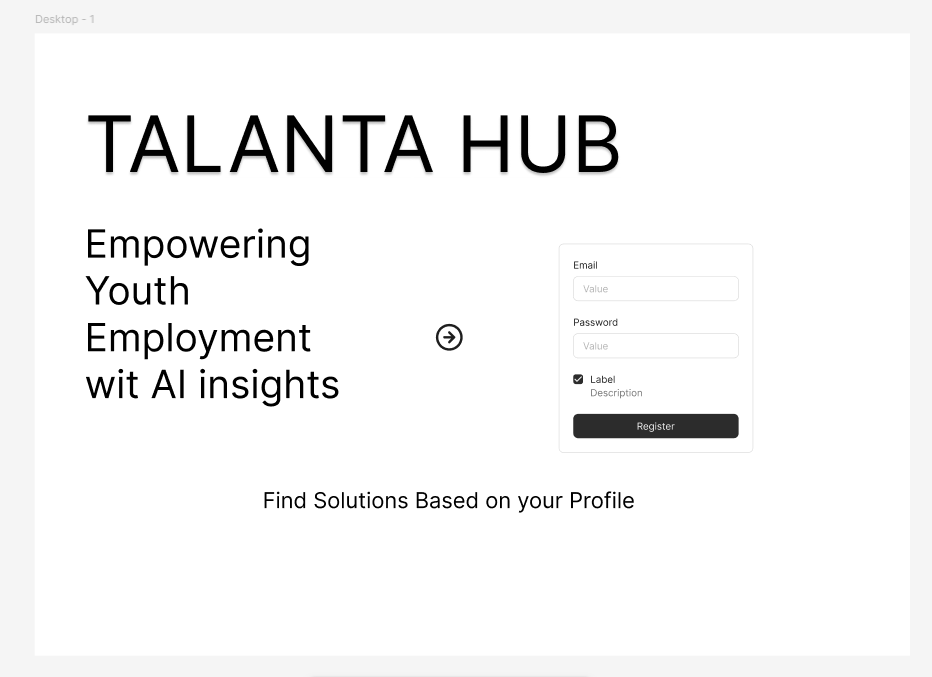
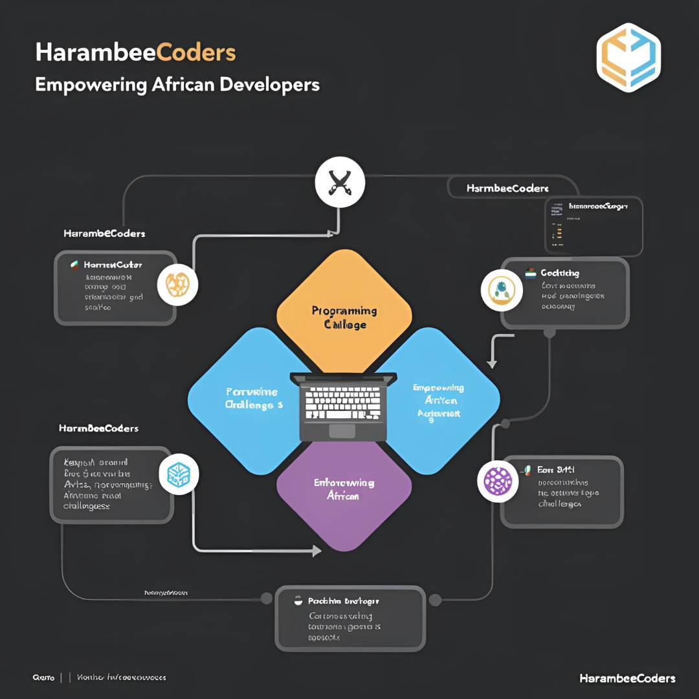

Data Scientist | Industrial Chemist | Machine Learning & Process Optimization
Data Scientist and Industrial Chemist with 5+ years of manufacturing experience in synthetic resins and coatings. I specialize in applying data analytics and machine learning to optimize industrial processes, improve product quality, and drive data-informed decision making. My work bridges chemistry, production systems, and predictive modeling to solve real-world operational challenges.
Synresins Kenya Ltd – Nairobi, Kenya
February 2020 – Present
Ministry of Petroleum and Mining – Directorate of Geological Surveys Laboratories | Nairobi, Kenya
July 2019 – October 2019
I hold a Bachelor of Technology in Industrial and Applied Chemistry and have over five years of hands-on experience in synthetic resin manufacturing. My professional foundation was built in process optimization, quality control, and industrial problem-solving within ISO-compliant environments.
My transition into Data Science was driven by a desire to solve problems at scale using data. Through self-learning, the Google Data Analytics program, and the ALX Data Science Program, I developed strong skills in Python, SQL, machine learning, statistical modeling, and data visualization.
I am particularly interested in applying machine learning and analytics to industrial systems — including predictive maintenance, process optimization, demand forecasting, and quality analytics. I enjoy transforming raw datasets into actionable insights that improve efficiency and strategic decision-making.
Currently, I am expanding my expertise into Data Engineering and production-level ML systems, focusing on scalable pipelines, model deployment, and real-world AI applications.

A machine learning-based recommendation system that matches job seekers to opportunities based on skill similarity, experience level, and industry trends. The system includes data preprocessing, feature engineering, similarity scoring, and predictive ranking algorithms to generate personalized job recommendations.
Technologies: Python, Pandas, Scikit-learn, NLP, SQL

A full-stack web platform designed to support aspiring developers through mentorship, project-based learning, and community collaboration. The platform integrates coding challenges, GitHub profile linking, and discussion forums to create an interactive learning ecosystem.
Technologies: React, Node.js, PostgreSQL, Socket.io
Professional Programs – ALX Africa
I'm always interested in discussing new opportunities, collaborations, or projects related to data science and industrial applications. Feel free to reach out!